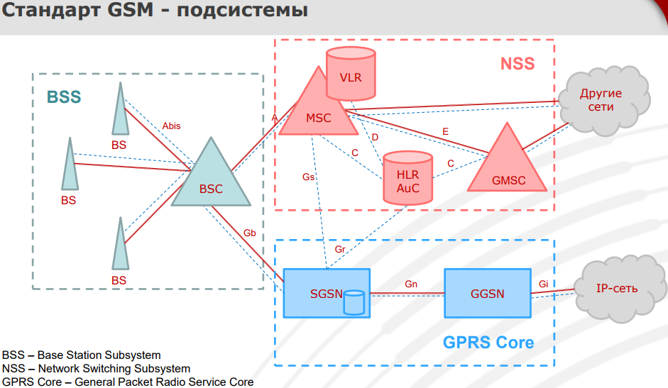

Презентация - https://www.ptsecurity.com/upload/corporate/ru-ru/webinars/ics/S_Puzankov_Mob_sv_evolution_standarts.pdf
Эволюция стандартов и технологий мобильной связи:
1) Стандарт 1G. Технология FDMA (Frequency Division Multiple Access). Один разговор занимал всю частоту.
2) Стандарт 2G. Технология TDMA (Time Division Multiple Access). Уплотнение радио каналов за счёт разделения частот на тайм-слоты. Решённая проблема: Имеющегося чстотного ресурса было уже недостаточно для моб. сетей.
3) Стандарт 3G + 2G CDMA One. Технология CDMA (Code Division Multiple Access). Все разговоры одновременно происходили на одной частоте, но кодировались разными кодами, не пересекающимися между собой. (Разделение радио каналов за счёт ортогональлных кодов, которые не являются ресурсом, имеющим ограничение). Преимущество: Для него не требовалось широких ресурсов на радиочасти, не было ограничивающих частотных факторов. Позволяло поддерживать одновременно большее количество вызовов.
4) Стандарт 4G. Технология OFDM (Orthogonal Frequency Division Multiplexing).
---

16:23